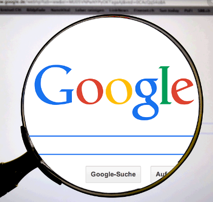

Search engine plays a significant role in Internet Era. Data collected from the search engine helps companies improvise their search engine and provide insightful data to its users. Google and Yahoo search engine have their own significance. Before Google came into market Yahoo minted a lot of money as Yahoo’s search engine allowed users to search Yahoo directory with ease. Yahoo came into market in 1994 while Google was launched in 1998 until then yahoo’s search engine played a key role.
Yahoo’s webpage includes Search Engine, News, Email, and Education related information. The reason people relied on Yahoo search engine was due to its layout. Yahoo’s search engine didn’t tune into play that well as output from search engine was not satisfying to its users. During that era Yahoo had good amount of investors willing to invest in Yahoo due to its ideas and growth. Yahoo was founded by Jerry Yang and David Filo in 1994 it was a popular search engine then.
Google came into limelight in the year 1998 founded by Larry Page and Sergey Brin. Google search engine generated millions of money due to its powerful search engine which was easily adaptable by users. Few things about search engine that people prefer is they want search engine generate results fast, well-versed information, and immediate results. Google became popular as it matched users requirement. Google webpage doesn’t have Media layout like Yahoos webpage but googles main aim was to generate quicker results accessible to its users.

Googles search engine rose to 10 billion in revenue. Car companies paid google to have their name appear first in their search engine. This is how google generated money by advertising. Google attracted a lot of businesses and they preferred to have their business information appear in googles search engine on the top. Keywords are future of business these keywords generate a lot of data and also speak a lot about its users. Google went into public in 1994. Google came up with google maps, mail, calendar, search, and docs. Google acquired companies like YouTube, Bing, Picasa, etc. Google has been popular ever since and has risen to fame all over the world. People of all ages rely on google search engine to access the data they are seeking for.
Image Source:
http://google.com/